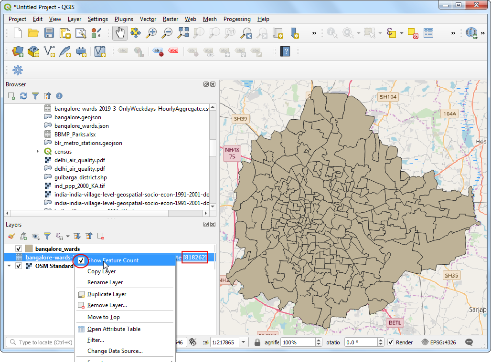
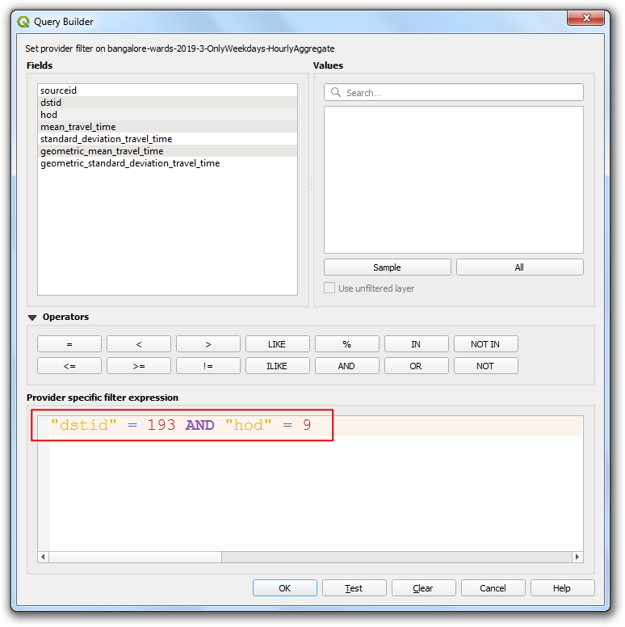
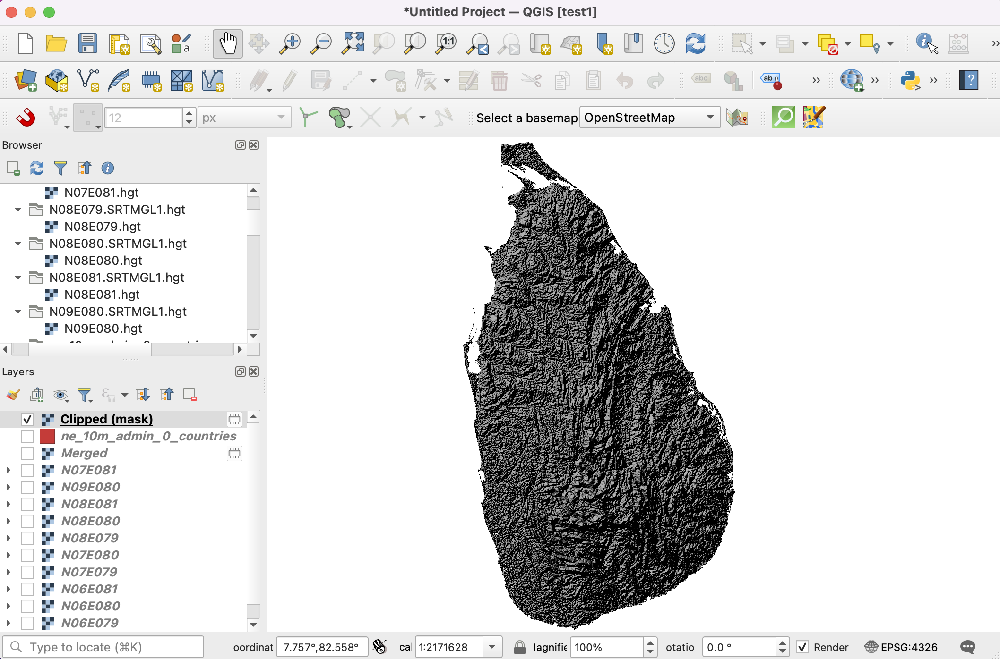

Análisis del tiempo de viaje con el movimiento de Uber (QGIS3)¶
Advertencia
Los datos de Uber Movement han sido descontinuados [ver anuncio]. Aún puede seguir el tutorial utilizando los datos de archivo proporcionados en el tutorial y aprender la técnica de análisis de tiempo de viaje utilizando QGIS.
Uber Movement comparte datos anónimos y agregados de tiempos de viaje de muchas ciudades del mundo. El producto Travel Times de Uber Movement es un conjunto de datos público que mide los desplazamientos de zona a zona en una ciudad. Estos tiempos se basan en viajes reales de Uber y son una representación precisa de la congestión y los patrones de tráfico en la ciudad. Se trata de un gran conjunto de datos de libre acceso que se ha agregado a partir de millones de viajes reales en taxi. Este tutorial muestra las técnicas para trabajar con tales conjuntos de datos de tráfico agregados para hacer el análisis del tiempo de viaje en QGIS.
Vista general de la tarea¶
Utilizaremos un conjunto de datos de tráfico agregados para la ciudad de Bangalore, India, para encontrar los tiempos de viaje a un lugar elegido de la ciudad. También crearemos un Mapa isócrono para un umbral de tiempo de viaje de 30 minutos.
Otras habilidades que aprenderá¶
Cargar un archivo GeoJSON en QGIS
Obtener los datos¶
Vamos a descargar el conjunto de datos de Tiempos de Viaje para la ciudad de Bangalore, India.
Vaya a la página web de Uber Movement y haga clic en la Cities.

Busque
Bangalore.

Haga clic en Download data.

En la ventana emergente
Download data, cambie a GEO BOUNDARIES. Contendrá el archivo GeoJSON de los distritos de Bangalore. Acepte la información de la licencia y haga clic enBANGALORE_WARDS.JSONpara descargarlo.

A continuación, cambie a
ALL DATA. Estos datos están disponibles desde 2016 hasta 2020, y cada año se divide en 4 trimestres. Vamos a descargar los datos delTrimestre 3 de 2019. Selecciónelo y haga clic enViajes por hora del día (sólo días laborables). Este archivo contendrá toda la información anónima sobre los viajes en Uber entre semana en Bangalore de julio a septiembre de 2019.

Para su comodidad, puede descargar los datos en los siguientes enlaces.
bangalore-wards-2019-3-OnlyWeekdays-HourlyAggregate.csv
Fuente de Datos: [UBER]
Procedimiento¶
Localiza el archivo
bangalore_wards.jsonen el panel Navegador y arrástralo al lienzo. A continuación, cargaremos una capa de mapa base de OpenStreetMap. Utilizaremos el plugin QuickMapServices para acceder al mapa base. Una vez instalado, ve a . Se añadirá al proyecto una capa de mosaico del mapa base de OpenStreetMap. A continuación, haga clic en el botón Abrir gesto de Fuentes de datos.

Cambie a la pestaña Texto delimitado. Busque el archivo
bangalore-wards-2019-3-OnlyWeekdays-HourlyAggregate.csvy selecciónelo. Dado que este archivo CSV es sólo datos tabulares, seleccione la opción Sin geometría (tabla de atributos solamente) y haga clic en Añadir.

La capa
bangalore-wards-2019-3-OnlyWeekdays-HourlyAggregatese añadirá al panel Capas`. Esta capa contiene datos anónimos y agregados de localización de viajes entre diferentes zonas de la ciudad. Cada fila de la tabla contiene columnas para la zona de origen (sourceid), la zona de destino (dstid), la hora del día (hod) y el tiempo medio de viaje agregado de todos los viajes entre estas zonas a esa hora (mean_travel_time). Puede obtener más información sobre este conjunto de datos en el documento Movement: Metodología de cálculo de los tiempos de viaje (pdf). Antes de seguir adelante, vamos a comprobar cuántos registros de datos están presentes en la capa. Haga clic con el botón derecho en la capabangalore-wards-2019-3-OnlyWeekdays-HourlyAggregatey seleccione Show Feature Count`. El total de filas de la tabla se mostrará junto a ella. Se trata de una tabla bastante grande, pero no necesitamos todas las filas de datos para nuestro análisis. Ahora identificaremos nuestra ubicación de destino y filtraremos esta tabla para obtener los registros de datos correspondientes.

Queremos calcular todas las áreas que son accesibles en 30 minutos desde una ubicación específica. Utilizando el mapa base OSM Standard, puede encontrar la ubicación de interés. A continuación, seleccione la capa
bangalore_wards, utilice la herramienta Identificar` y haga clic en ella. Los resultados mostrarán los atributos de la zona que contiene la ubicación. Para el propósito de este tutorial, vamos a suponer que nuestra ubicación de destino se encuentra dentro de la zona JP Nagar con el ID_MOVIMIENTO 193.

Podemos filtrar los registros de tiempos de viaje para que sólo aparezcan los que tienen esta zona como destino. También podemos restringir nuestro análisis a la hora punta de la mañana de 9 a 10. Haga clic con el botón derecho en la capa
bangalore-wards-2019-3-OnlyWeekdays-HourlyAggregatey seleccione Filtro.

Introduzca la siguiente expresión de filtro y haga clic en Aceptar.
"dstid" = 193 AND "hod" = 9
De vuelta a la ventana principal de QGIS, verá que el número de registros en la tabla filtrada se reduce ahora a sólo 197. Dado que hay un total de 198 zonas en la ciudad, tenemos registros de tiempos de viaje entre 1 barrio de destino y 197 zonas de origen. Abra la tabla de atributos de ambas capas utilizando el botón Abrir tabla de atributos de la barra de herramientas Atributos.

Ahora tenemos las formas del barrio en la capa
bangalore_wardsy la información tabular en la capabangalore-wards-2019-3-OnlyWeekdays-HourlyAggregate. Podemos unir la información de atributos a las formas utilizando un atributo común. En este caso, la columnaMOVEMENT_IDde la capabangalore_wardsy la columnasourceidde la capabangalore-wards-2019-3-OnlyWeekdays-HourlyAggregateson identificadores de distrito únicos que pueden unirse. Esta operación se denomina Unión de Tablas.

Antes de poder unir estas dos capas, debemos asegurarnos de que los valores de ambas columnas coinciden exactamente. Aunque parezcan iguales, son de distinto tipo. Como el formato GeoJSON no tiene forma de especificar los tipos de propiedades, se asume que todos los valores son del tipo String - es decir, Texto. Pero cuando importamos un CSV a QGIS, por defecto, QGIS intenta determinar los tipos de las columnas basándose en los valores y asignando el tipo de campo apropiado. Para el archivo CSV, el tipo de datos de la columna
sourceidfue asignado como Integer. Así que tenemos que convertir la columna del GeoJSON a un tipo Integer también. Vaya a . Haga doble clic para lanzarlo.

Elija
bangalore_wardscomo la Capa de entrada. Nombra el campo comojoinfieldy selecciona el Tipo de campo resultado comoInteger. IntroduzcaMOVEMENT_IDcomo expresión. Haga clic en el botón … junto a Calculado y seleccione Guardar en archivo… e introduzca el nombre del archivo de salida comobangalore_wards_fixed.gpkg. Haga clic en Ejecutar. Cierre la calculadora de campos.

Se añadirá una nueva capa
bangalore_wards_fixedal panel Layers`. Ahora estamos listos para realizar la unión. Vaya a . Haga doble clic para lanzarlo.

Seleccione
bangalore_wards_fixedcomo Capa de entrada yjoinfieldcomo Campo tabla`. Seleccionebangalore-wards-2019-3-OnlyWeekdays-HourlyAggregatecomo Capa entrada 2 ysourceidcomo Campo tabla 2. Nombre la capa Capa unida comouber_travel_times.gpkgy haga clic en Ejecutar.

Se añadirá una nueva capa
uber_travel_timesal panel Capas`. Vamos a estilizarla para visualizar el resultado de la unión. Haga clic en Abrir el panel de estilo de capas. Selecciona el renderizadorGraduadoymean_travel_timecomo Valor`. Seleccione una rampa de color y haga clic en Clasificar. Verá que el mapa muestra tiempos de viaje crecientes a medida que se aleja del destino.

Pero lo que queremos es analizar y extraer las zonas que están a menos de 30 minutos de viaje, así que tenemos que hacer algo más de procesamiento. Vuelva a cambiar el estilo al renderizador Símbolo único. Haga clic con el botón derecho en la capa
uber_travel_timesy seleccione Filtro`.

Introduzca la siguiente expresión para seleccionar todas las zonas que estén a menos de 1800 segundos (30 minutos) del tiempo medio de viaje. También tenemos que incluir nuestra zona de destino que tendrá 0 tiempo de viaje.
"mean_travel_time" <= 1800 OR "MOVEMENT_ID" = 193
La capa mostrará ahora el conjunto de polígonos que constituyen el área de interés. Ahora fusionaremos todos ellos en un único polígono. Vaya a . Haga doble clic para lanzarlo.

Seleccione
uber_travel_timescomo la capa Entrada. Nombre la capa Dissolved como30min_isochrone.gpkg. Haga clic en Ejecutar.

Se añadirá una nueva capa
30min_isochroneal panel Capas` que muestra el resultado de nuestro análisis.

If you want to give feedback or share your experience with this tutorial, please comment below. (requires GitHub account)